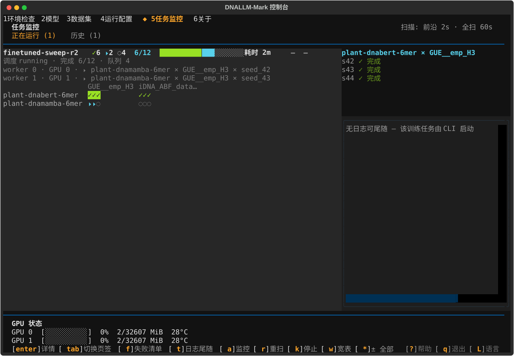
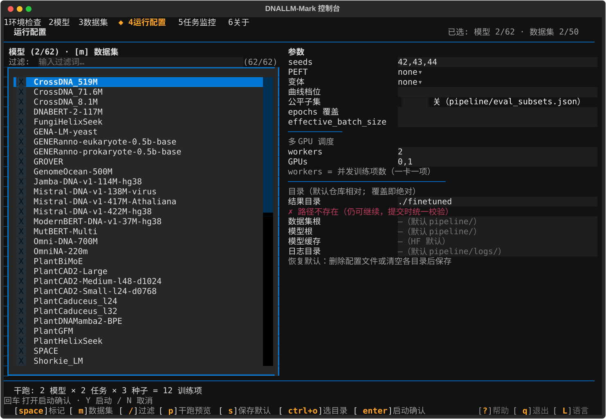
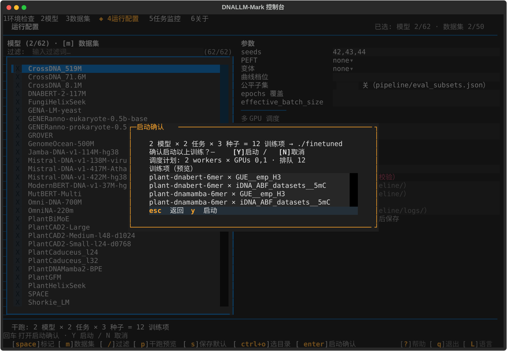
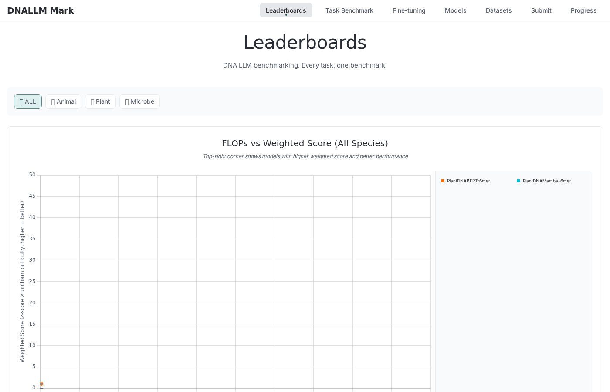
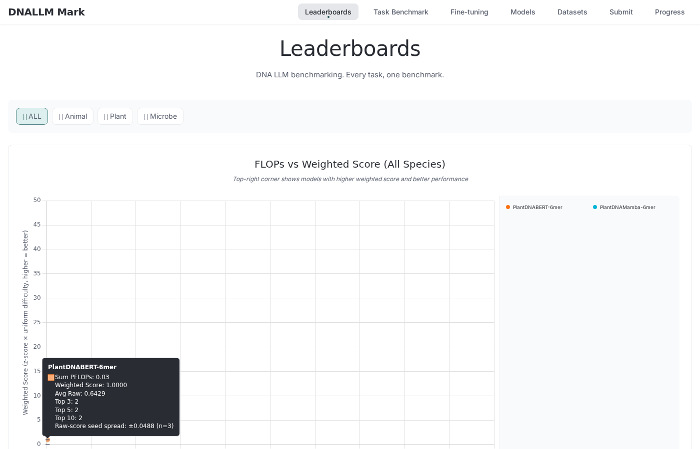
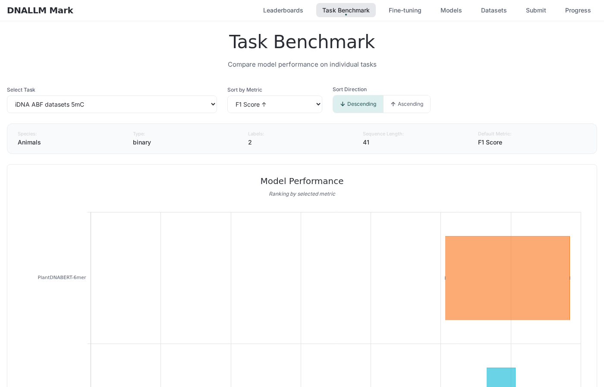
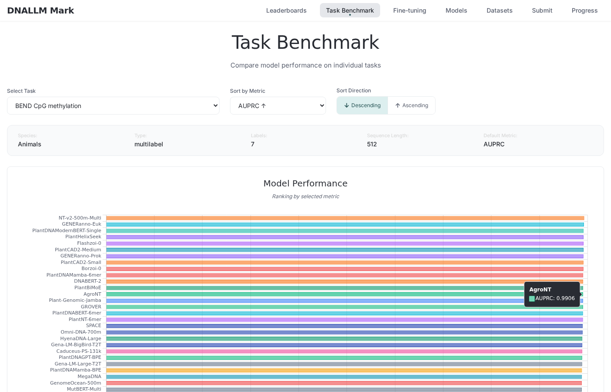

DNALLM-Mark v1.3 Milestone Test Report
多 GPU 编排与验证 · Phases 13–18 · generated 2026-10-22 · the multi-GPU orchestration & validation milestone — what was built, what ran, and where every number comes from
§ Summary
All 20 v1.3 requirements delivered; every lane green at the documented baseline with 6 environmental exclusions (below).
v1.3 spanned six phases: the dynamic dispatch engine (13), the orchestration view and failure recovery (14), dual-GPU validation with 5% subset datasets (15), the TUI multi-GPU surface (16), web multi-seed error bars (17), and documentation (18). The verification scores of the five implementation phases — 23/23 · 28/28 · 7/7 · 41/41 · 16/16 — are cited from their verification frontmatters (.planning/phases/13-dynamic-dispatch-core/13-VERIFICATION.md, 14-…/14-VERIFICATION.md, 15-…/15-VERIFICATION.md, 16-…/16-VERIFICATION.md, 17-…/17-VERIFICATION.md), and every GPU number in this report is paired with the run id from the same archived artifact (the run_id/timing pairing discipline, 18-RESEARCH.md Pitfall 1).
| Lane | Scope | Result | Status | Notes |
|---|---|---|---|---|
| pytest full suite | repo-wide CPU lanes (make test) |
2236 passed / 3 skipped / 6 environmental | ⚠ ENVIRONMENTAL-EXCLUDED | Recorded 2026-10-21 (.planning/phases/17-web-multiseed-error-bars/17-VERIFICATION.md:121): “SUMMARY records 2236 passed / 6 documented environmental root-chmod failures, and the suite needs the machine's academic proxy for one evaluate-touching lane”. The 6 exclusions are classified in .planning/phases/17-web-multiseed-error-bars/17-03-SUMMARY.md:85; a fresh full-suite run is owned by the milestone-close gate, not re-run in-phase (Q4 ruling). |
| node lanes | node --test tests/js/*.test.js |
44/44 pass | ✓ PASS | Recorded 2026-10-21 (17-VERIFICATION.md:69), incl. tests/js/error-bars.test.js (18 cases). |
| pty real-app lane | tests/tui/test_pty_driver.py |
green (inside the recorded suite runs) | ✓ PASS | The permanent real-pty regression lane (spawned the REAL app under a pty, asserting render behavior Pilot cannot see); part of make test since 261018-08g. |
| tier-1 contract pins | tests/test_run_finetune_contracts.py family |
76 green | ✓ PASS | Incl. the 15-05 eval-merge ordering pin (.planning/phases/15-dual-gpu-validation-subsets/15-05-SUMMARY.md: “contracts 76 + regression 306 green”). |
| determinism + vendored stats | tests/test_determinism.py + tests/test_vendored_stats.py |
10 passed, unmodified | ✓ PASS | Zero-drift gates over the committed data tree (17-VERIFICATION.md:57: both files “run this pass … git log since phase start shows zero edits”). |
| dispatch + shard suites | tests/test_dispatch_core.py + tests/test_sweep_shard.py |
102 passed | ✓ PASS | “102 passed in 1.42s” (13-VERIFICATION.md:162); grew to 93 dispatch tests / 155 combined by 14-03 (.planning/ROADMAP.md, Phase 14 plan row). |
| TUI snapshot goldens | tests/tui/test_snapshots.py (10 committed SVGs) |
working-tree golden lane 12/12 | ◌ PENDING-REVIEW | Machine-verified this pass (16-VERIFICATION.md maintainer_handoff): exactly 4 SVGs remain deliberately UNCOMMITTED pending maintainer review — WINDOWS #50. |
✓ PASS ⚠ ENVIRONMENTAL-EXCLUDED (reason mandatory) ◌ PENDING-REVIEW ✗ FAILED (disposition mandatory)
13 — Dynamic dispatch core (动态调度核心)
Goal
The orchestrator dispatches (model×dataset×seed) cells as a work queue over per-GPU workers with worker-independent cell outputs, an exactly-once claim ledger, and resume semantics proven under mid-cell kill — legacy static sharding coexists behind explicit mode declaration. ( ROADMAP.md, Phase 13 Goal — requirements MGPU-01, MGPU-02, MGPU-06 )
What Shipped
- A new sibling engine
pipeline/dispatch_core.py(lazy-imported byrun_sweep_shard.pybehind--mode {static,dispatch}): deterministic enumeration → zero-cell refusal → lock →dispatch_state.jsonevidence → O_EXCL claim ledger (dispatch_ledger/) → spawn → finalize; the static path stayed byte-identical with the 49-test shard suite as the tripwire. (13-01-SUMMARY.md) - Dry-run plan artifact (the static projection verbatim plus one
orchestrator_mode: "dispatch"marker), evidence-based merge refusal (dispatch roots need no merge), static byte-identity pins, and the Makefile lint slot. (13-02-SUMMARY.md) - Code-review hardening with mutation-proven pins: CR-01
--from-failureshonored in dispatch mode, CR-02 lock create-to-write grace, CR-03 child pid persisted before wait, CR-04 per-cell containment; WR-01/02/03 claim-ledger guards. (STATE.md, Phase 13 decisions)
Evidence
- Verification score: 23/23 must-haves verified,
status: passed(.planning/phases/13-dynamic-dispatch-core/13-VERIFICATION.md frontmatter, verified 2026-10-20). - Suite:
tests/test_dispatch_core.py+tests/test_sweep_shard.py— 102 passed in 1.42s (13-VERIFICATION.md:162), including the SC2 acceptance testtest_sc2_kill_test_resume_exactly_once(a worker killed mid-cell and relaunched completes every cell exactly once — “green in this pass's 102/102 run”, 13-VERIFICATION.md:54) and the dry-run byte-identity tests (test_dispatch_dry_run_is_byte_identical_across_runs). - The frozen protocol order, claim naming (percent-encoded fields + sha256[:12] digest suffix), and stale-lock reclaim by pid-liveness are pinned in the module docstring of
pipeline/dispatch_core.pyand cited by 13-VERIFICATION truths 9-21.

The dispatch line and per-worker rows render the real archived mid-run dispatch_state of the r2 sweep (status running, 完成 6/12, 队列 4, GPU 0 in-flight
plant-dnamamba-6mer × GUE__emp_H3 × seed_42, GPU 1 in-flight seed_43 — the artifact quoted in 15-03-SUMMARY.md:164-166); the G GPU-lanes panel carries the live nvidia-smi probe output on the validation machine at capture time (both GPUs idle post-milestone: 0%, 2/32607 MiB, 28 °C); the card's cell grid is a harness fixture reconstructed from that archived state (the real root is post-run today).Proves: the shipped slot-5 surfaces render real dispatch state and real probe rows — the dispatch artifact introduced in Phase 13 (and frozen at schema v2 in Phase 14) is what the operator actually sees.
Analysis
The hard problem was exactly-once execution under crash: a dispatcher killed mid-cell must never double-run or lose a cell on relaunch. Phase 13 solved it structurally — the O_EXCL claim ledger makes double-claim impossible by construction, resume is pure per-cell relaunch_decision over on-disk evidence (trainer_state marker or completed claim with agreeing cell key), and the SC2 kill test proves the property from the disk state alone rather than from orchestrator memory. The cost of that discipline appeared later as a genuine gap: dispatch roots initially carried no run_record.json (Phase 13 decision A3 deferred it), which surfaced as the 15-01 halt and was closed by 15-04 (see Gap Closures).
14 — Orchestration view & failure recovery (编排运行视图与失败恢复)
Goal
Running multi-GPU sweeps are observable (terminal table + machine-readable state file) and recoverable (cross-worker failure re-run with lane context; post-merge verify + confirm-gated cleanup). ( ROADMAP.md, Phase 14 Goal — requirements MGPU-03, MGPU-04, MGPU-05 )
What Shipped
dispatch_state.jsonfrozen at consumer schema v2 (schemas/dispatch_state.json, strict draft 2020-12) — queue depth derived at publish under the state lock, per-worker in-flight cells, bounded failures list — plus the live plain-line terminal table rendered insidedispatch_core.pyat the_write_statechoke point. (14-01-SUMMARY.md)export_runs.py --dry-runconsumption seam and the--cleanupsibling mode: dual verification before any removal, behind a typed-phrase gate (the resolved--output-rootstring, exact equality); dispatch roots refuse merge by evidence. (14-02-SUMMARY.md)- Ledger-driven cross-worker failure re-run:
--rerun-failedreplays the claim-time lane verbatim (peft lane preserved — the 12-04 lane-blindness fixed), with append-only archive genealogy (dispatch_ledger/archive/+rerun_of) and per-cell heterogeneous-lane refusal. (14-03-SUMMARY.md)
Evidence
- Verification score: 28/28 must-haves verified,
status: passed(.planning/phases/14-orchestration-view-recovery/14-VERIFICATION.md frontmatter, verified 2026-10-20). - Suite growth over the Phase-13 baseline: 66 dispatch tests at 14-01, 93 dispatch tests / 155 dispatch+shard combined at 14-03 (ROADMAP.md, Phase 14 plan rows); the flush property was proven on real lanes — a pty test reads the first
[Dispatch]header within 3 s while a 5 s-holding fake cell keeps the drain alive (STATE.md, 14-01 decisions). - Named pins: the schema consumer test over
schemas/dispatch_state.json, the D14-15 end-to-end (one command re-runs exactly the failed cells with byte-identical lane argv), and the typed-phrase cleanup refusal paths — all intests/test_dispatch_core.py/tests/test_export_runs.py.
Analysis
The hard problem was observability that can never kill the run: the live table renders inside the single-writer state lock at the write choke point, so every rendered line corresponds to a committed state file — and the renderer's output errors are swallowed by contract, because a dying view must never fail a cell. The companion problem was trustworthy recovery: re-running failures verbatim required capturing the full lane (model, task, seed, fraction, peft, variant flags) at claim time — before anyone knew a cell would fail — which is why the ledger stores the lane in the claim itself and the re-run is a replay, never a re-derivation.
15 — Dual-GPU validation & subsets (双卡验证与子数据集)
Goal
The dispatch orchestrator is proven on the local 2× RTX 5090 — the multi-gpu N=2 smoke passes and a small real sweep over pre-materialized 5% stratified subsets runs both GPUs end-to-end through the data chain. ( ROADMAP.md, Phase 15 Goal — requirements VAL-01, VAL-02, VAL-03 )
What Shipped
- The N=2 dispatch smoke green on a fresh root (
pipeline/finetuned-smoke-r2) after the 15-04 run_record gap closure — all four D15-02 criteria incl. the consumption dry-run; WINDOWS #21/#44 closed; docs/multi-gpu.md rewritten as the executed procedure (15-01-SUMMARY.md). - The subset generator
script/make_subset_datasets.py: stdlib-only, per-split independent stratified sampling withk = max(1, int(n × fraction))floor-of-1, run-twice byte-identity, and registry isolation that refuses official-dir overlap (15-02-SUMMARY.md). - The 12-cell real sweep on the fresh root
pipeline/finetuned-sweep-r2(2 models × 2 subset tasks × 3 seeds, 1 epoch) with the zero-modification export→summarize consumption proof and five archived JSON artifacts; WINDOWS #45 closed (15-03-SUMMARY.md). - Two gap closures that this phase's halts forced: 15-04 (dispatch run_record writer) and 15-05 (option-A eval merge) — told in full in the Gap Closures section.
Evidence
- Verification score: 7/7 must-haves verified,
status: passed(.planning/phases/15-dual-gpu-validation-subsets/15-VERIFICATION.md frontmatter, verified 2026-10-21). - Subset suite:
tests/test_subset_datasets.py— byte-identity, isolation, and fail-fast pins; the real-artifact checks (D15-15, repointed to the r2 evidence-of-record root + the eval-key pin) ran 27 passed (15-03-SUMMARY.md:218). - Real measured subset rows (from the executed generator log): 5mC train/dev/test 105/11/117 (source 2110/234/2344); emp_H3 598/74/74 (source 11971/1497/1497) (subset-generation.log, quoted in 18-01-SUMMARY.md Task 3).
- Consumption proven at content level:
models_comparison_animal.jsonavg_raw equals the 5mC f1 mean and_microbe.jsonequals the emp_H3 f1 mean per model; the committeddnallm-mark/data/tree stayed porcelain-clean throughout (15-03-SUMMARY.md:197-207).
Analysis
The hard problem was trusting the chain end-to-end: the first sweep was green at the orchestrator level yet halted at the consumption proof, because the exported score slots were empty — a producer seam gap (run_finetune discarding trainer.evaluate() since the port) that no orchestrator-level test could see. The phase's instrument was the halt-at-consumption discipline plus the fresh-root re-run: the fix landed behind tier-1 pins, and the proof was a brand-new 12-cell run on a root whose resume markers could not mask anything, with the eval gate asserted before the chain rather than after it.
16 — TUI multi-GPU surface (TUI 多 GPU 界面)
Goal
The operator console launches and watches multi-GPU runs natively — slot-4 multi-GPU launch through the unchanged gate chain, slot-5 consumption of dispatch state, and the deferred G GPU-lanes display over a read-only nvidia-smi probe. ( ROADMAP.md, Phase 16 Goal — requirements TUI-01, TUI-02, TUI-03, TUI-04 )
What Shipped
- The
gpu_probeservice (textual-free CSV-mode subprocess probe, frozen dataclass rows, the one shared absent-outcomeNonefor every failure mode) and the standing G GPU-lanes panel on the monitor's 2 s cadence — per-GPU utilization bar+%, memory used/total, temperature, with honest未安装/N=0empty states (16-01-SUMMARY.md). - The tolerant
dispatch_state.jsonv2 reader (frozen schema, None sentinel, invariant-checked-never-repaired) and the slot-5 Running-card dispatch rows: the dispatch line (queue depth, status) plus per-worker busy/idle rows, stale-marked past the shipped 3600 s cell-scale grace (16-02-SUMMARY.md; grace value per 16-REVIEW WR-02). - Slot-4 multi-GPU launch:
RunSpecworkers/gpus fields,compose_dispatch_argv(run_sweep_shard.py --mode dispatch --workers N,--gpuspresent-only), the EHC-3 predicate replaced by multi-GPU capacity arithmetic, and the dispatch-plan preview line on both confirm faces (16-03/16-04-SUMMARY.md). - Goldens regenerated: 3 SVGs + 1 new, deliberately uncommitted pending maintainer review — WINDOWS #50 (16-05-SUMMARY.md; 16-VERIFICATION.md maintainer_handoff).
Evidence
- Verification score: 41/41 must-haves verified,
status: passed(.planning/phases/16-tui-multi-gpu-surface/16-VERIFICATION.md frontmatter, verified 2026-10-21). - Named monitor/gate tests:
tests/tui/test_pilot_monitor.py(incl. the NO_COLOR glyph-first G-panel legibility pin,test_g_panel_no_color_pass),tests/tui/test_services_gpu_probe.py,tests/tui/test_services_dispatch_state.py,tests/tui/test_pilot_run_config.py,tests/tui/test_services_sweep_launcher.py— the phase's covered-files list in 16-VERIFICATION.md. - The pty byte-silence lane proved the G-panel cadence worker adds zero bytes when nothing changes on the real 2×5090 box (STATE.md, 16-01 decisions).

The picker lists the real overlay-merged registry on the validation machine (已选: 模型 2/62 · 数据集 2/50 — 59 official + 3 local custom models, 50 official datasets); the marks are the executed r2 matrix (
plant-dnabert-6mer, plant-dnamamba-6mer × GUE__emp_H3, iDNA_ABF_datasets__5mC), seeds 42,43,44; the 多 GPU 调度 section carries workers/GPUs 0,1; the preview line 干跑: 2 模型 × 2 任务 × 3 种子 = 12 训练项 is the real count for exactly that matrix. Params/argv legs delegate to the real service module; screen state and paths are harness fixtures.Proves: slot-4 composes the multi-GPU dispatch spec natively over real registry data — the same matrix the r2 sweep executed (16-03/16-04).

The gate chain (fresh enumeration → problems → capacity → env preflight → confirm) is the real screen code; the gate summary is computed from the spec by the service's own
gate_confirm_data arithmetic — 调度计划: 2 workers × GPUs 0,1 · 排队 12, with the four real (model × task) pairs listed; the modal renders, never computes.Proves: the dispatch-plan preview line (D16-11) shows the operator the exact dispatch shape before the typed y-launch.
Analysis
The hard problem was machine-independence with real hardware in the loop: the G panel must render live GPU rows on the validation box yet produce byte-identical goldens on a GPU-less CI runner. The solution was constructor-injection seams at every real-service boundary (probe provider, dispatch reader) plus per-region render gating — a lane value change never rewrites a healthy note, and the whole corpus renders the same bytes everywhere, with the honest 未安装 degradation pinned as a first-class golden rather than an error path.
17 — Web multi-seed error bars
Goal
Multi-seed results display with error bars on the public pages — additive mean/std/n_seeds through the data chain, scatter whiskers via a vendored inline Chart.js plugin, floating-bar task charts — with zero drift in existing numbers. ( ROADMAP.md, Phase 17 Goal — requirements WEB-01, WEB-02, WEB-03 )
What Shipped
- The additive data-chain trio: schemas gained optional
mean/std/n_seedsin properties only (required arrays unchanged),export_runs.pyemits the trio at one site per view on the declared primary metric (population std, ddof=0, via a new helper outside the vendored banner),summarize_comparison.pypropagates per-model stats into all four arena files, and METHODOLOGY.md fixes the sd-vs-std conventions once (17-01-SUMMARY.md). - The browser leg: a vendored inline Chart.js plugin (
errorbars,afterDatasetsDraw, zero new CDN scripts) drawing scatter whiskers with chartArea clamping; native floating-bar task charts on the primary metric with caps and no stems; tooltips gain the ±std line reading the model closure (17-02-SUMMARY.md). - The node lane: fixtures generated from the real r2 tree (byte-idempotent, generator independent of the module under test) driving geometry-at-1e-9, additive-schema, and honest-absence tests (17-03-SUMMARY.md).
Evidence
- Verification score: 16/16 must-haves verified,
status: passed(.planning/phases/17-web-multiseed-error-bars/17-VERIFICATION.md frontmatter, verified 2026-10-21). - Node lane 44/44 incl.
tests/js/error-bars.test.js(18 cases) (17-VERIFICATION.md:69); zero-drift gates —tests/test_determinism.py+tests/test_vendored_stats.py10 passed unmodified, trio-stripped equivalence over pre-existing keys (17-VERIFICATION.md:57-58). - The committed
dnallm-mark/data/tree was never regenerated: porcelain clean, zeron_seedskeys in committed data (17-VERIFICATION.md:62).

Real execution: real Chromium (playwright-core) over the Phase-15 r2 sweep re-run through the real export→summarize chain; the plugin
errorbars registered on the live chart, the std point carries std=0.0488 / nSeeds=3, and marker ink was pixel-verified at the point pixel (17-VERIFICATION.md, “Visual Verification — Delegated to Orchestrator”). The whisker itself is sub-pixel on this view (std 0.049 against a 0–50 y-axis) — the honest rendering of a tiny spread, exactly as designed.Proves: the vendored inline plugin registers and renders on a real browser canvas against real sweep-derived data — no pixel lane existed before this capture.

Real execution at report-generation time: the pointer was moved to the std point's live pixel (read back from the chart instance: x=54, y=489 — matching the recorded geometry evidence), and the live chart state was read back before the shutter: tooltip
opacity=1, 1 active element, 1 body line. The tooltip carries the “Raw-score seed spread: ±0.0488 (n=3)” qualification line on the std-carrying model.Proves: the ±std tooltip line renders on real data and only on std-carrying models (the honest-absence contract, SC-2a/2e).

Real execution: live chart state read back — dataset = 2 floating-bar arrays exactly mean±std (0.5952±0.0891 → [0.5062, 0.6843]; 0.5861±0.0607 → [0.5654, 0.6068]), and PNG pixel assertions found bar ink across both spans and both whisker caps at the exact predicted pixels (17-VERIFICATION.md, “Visual Verification”).
Proves: the primary-metric task chart renders floating bars with caps (no stems) from real multi-seed values.

Real execution: pointer hovered a bar in the same headless session; the tooltip renders the model row with the ±std seed-spread line, reading the model closure (never
context.raw on floating arrays — the WR-02 review fix).Proves: the tooltip qualification works on the floating-bar data form the review flagged as the misprint hazard.
Analysis
The hard problem was zero drift while adding numbers everywhere: every new field had to be additive-optional so that suppressing std leaves every downstream byte identical to pre-v1.3. That drove the gate split (absent-case determinism suites run unmodified; additive-case equivalence compares trio-stripped inputs), the single-emission-site rule (one trio birthplace feeding both export views), and the ddof discipline — display std is population std (ddof=0), deliberately different from the vendored sd (ddof=1), with both conventions fixed once in METHODOLOGY.md.
18 — Documentation (文档撰写)
Goal
v1.3's multi-GPU workflow is fully documented for operators and external reviewers — the dispatch-mode runbook, README/ONBOARDING multi-GPU + subset sections, TUI multi-GPU usage doc, and version-consistent v1.3.0 release documentation. ( ROADMAP.md, Phase 18 Goal — requirements DOCS-01..DOCS-04, plus this report under D18-05..D18-08 )
What Shipped
docs/multi-gpu.mdrestructured dispatch-first — the three-way mode table (dispatch primary / static legacy / DDP deferred with seam citations), the generalized dispatch launch/watch/--rerun-failedrunbook, the 5% subset workflow with executed row counts, and a first-class--cleanupsubsection — with the executed Phase-15 smoke record byte-preserved (sha256-pinned fences) (18-01-SUMMARY.md; DOCS-01 landed).- README's “Multi-GPU sweeps (dispatch mode) and 5% subset datasets” subsection with copy-paste commands and executed expected-output lines; ONBOARDING §6 dispatch pointer + generate→configure→run→consume summary + the task-filter-vs-subset-dataset disambiguation; GETTING-STARTED's descriptor refreshed; zero-stale audit green across all three (18-02-SUMMARY.md; DOCS-02 landed).
- TUI-DEMO section 11 in the precedent five-part anatomy (the honest no-GIF variant with the queued re-record note), the TUI-GUIDE multi-GPU section corrected to shipped Phase-16 reality (stale grace 3600 s, GPUs default
0..workers-1— shipped-source facts supersede the pre-review UI-SPEC values), and the about-screen milestone row reading the delivered v1.3 scope with all version surfaces verified at 1.3.0 (18-03-SUMMARY.md; DOCS-03/DOCS-04 landed). - This report itself — the D18-05..D18-08 deliverable.
Evidence
- The 18-01 gates: the smoke record's fenced blocks byte-identical (sha256
dcdbc798…asserted at every task),--mode staticspelled into every static launch command, the retired “composes single sweeps” claim absent (18-01-SUMMARY.md, Verification Evidence). - The 18-02 zero-stale audits (three greps, zero findings) and the premature-report-reference count zero; the 18-03 symbol-based about-pin test green with zero test edits (27 passed) and
make lint+make typecheckclean (18-02/18-03-SUMMARY.md). - This document's own structural gates: zero external requests (no scripting of any kind, no CSS imports, no external URLs, no web fonts), zero absolute machine paths, relative
report-assets/references only, every number cited to a named in-repo artifact.
Analysis
The hard problem was honesty under documentation pressure: docs that describe what really shipped (3600 s stale grace, not the pre-review 60 s; GPUs default 0..workers-1, not “all detected”) and a report whose every figure states what process actually ran and over what data — real executions badged PASS, unreviewed captures badged PENDING-REVIEW, and nothing fabricated. That discipline is why this report pairs every GPU number with the run id from the same archived artifact and why the three TUI figures above carry PENDING-REVIEW badges naming the WINDOWS #50 batch.
§ Gap closures
Two gaps that Phase 15's real-chain validation surfaced, both closed by dedicated plans with the maintainer's ruling. They are the milestone's clearest evidence that running the real thing finds what unit tests cannot.
§ GPU run evidence
Both milestone GPU runs executed on the validation machine (2× RTX 5090). Every number below is paired with the run id read from the same archived artifact as the timing — the pairing discipline of 18-RESEARCH Pitfall 1.
The N=2 dispatch smoke (r2)
- Wall duration 155 s (2026-10-20T15:20:00Z → 15:22:35Z, exit 0), 2 cells — run id
7759c2cc05364ebdacd2c6a5fa614bac. Both numbers are cited from the same execution record (15-01-SUMMARY.md:102,108). - Terminal state:
status=done queue=0 done=2/2 failed=0 skipped=0; worker 0 completed 1 cell on gpu 0, worker 1 completed 1 cell on gpu 1 — both GPUs produced artifacts, with seed_42 and seed_43 in flight simultaneously (15-01-SUMMARY.md:103-107). - Consumption:
export_runs.py --dry-runexits 0 printing “[Dry-run] 2 run record(s) across 1 model(s) / 1 task(s)” (15-01-SUMMARY.md:117-119).
The 12-cell real sweep (r2)
- Wall duration 272 s (2026-10-21T00:11:11Z → 00:15:43Z, exit 0), dispatch done 12/12, 0 failed, 0 skipped, both GPUs — run id
4e74c92d27944db9a20488cb374719a4. All cited from the same execution record (15-03-SUMMARY.md:145-147). - Matrix:
plant-dnabert-6mer+plant-dnamamba-6mer×iDNA_ABF_datasets__5mC+GUE__emp_H3× seeds 42/43/44, 1 epoch, over the 5% subsets; workers w0 gpu=0 (4 cells) + w1 gpu=1 (8 cells); subset-scale step counts (5mCmax_steps=27, emp_H3150) (15-03-SUMMARY.md:150-156). - The eval gate:
eval_f1present and numeric in all 12 final_metrics (e.g. 5mC seed_42eval_f1=0.7143) and mirrored into every run_record (15-03-SUMMARY.md:157-163).
Figure — terminal dispatch_state.json of the r2 sweep (12/12, run_id 4e74c92d…), as written by the dispatcher
Read from the evidence-of-record root pipeline/finetuned-sweep-r2/dispatch_state.json (the live file the run wrote; fields quoted in 15-03-SUMMARY.md). HTML-escaped pasted evidence — angle brackets and ampersands escaped per the report's injection-discipline mitigation.
{
"counts": { "completed": 12, "failed": 0, "skipped": 0, "total": 12 },
"failures": [],
"mode": "dispatch",
"queue_depth": 0,
"run_id": "4e74c92d27944db9a20488cb374719a4",
"schema_version": 2,
"started_at": "2026-10-21T00:11:11.710955+00:00",
"status": "done",
"updated_at": "2026-10-21T00:15:43.892198+00:00",
"workers": [
{ "cells": 4, "completed": 4, "failed": 0, "gpu": "0", "in_flight": null, "index": 0 },
{ "cells": 8, "completed": 8, "failed": 0, "gpu": "1", "in_flight": null, "index": 1 }
]
}Figure — live dispatcher output, the run's first lines (sweep-dispatch-r2 log)
The plain-line terminal table rendered by the Phase-14 view at the _write_state choke point; archived run log, head quoted in 18-RESEARCH §T7.
[Dispatch] status=running queue=12 done=0/12 failed=0 skipped=0
w0 gpu=0: -
w1 gpu=1: -
[Dispatch] status=running queue=11 done=0/12 failed=0 skipped=0
w0 gpu=0: plant-dnabert-6mer/GUE__emp_H3/seed_42
w1 gpu=1: -
[Dispatch] status=running queue=10 done=0/12 failed=0 skipped=0
w0 gpu=0: plant-dnabert-6mer/GUE__emp_H3/seed_42
w1 gpu=1: plant-dnabert-6mer/GUE__emp_H3/seed_43